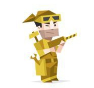

ISTP : شخصية الحرفي

شخصية انطوائية ، حسية ، عقلانية ، مرنة
هي الشخصية الملتزمة بفهم الميكانيكا، استكشاف الأخطاء وإصلاحها، وتتعامل هذه الشخصية بمنطق ومرونة، ودائمًا ما تبحث عن الحلول العملية للمشاكل المطروحة ، شخصية مستقلة وقادرة على التكيف، ويمكنها التفاعل مع العام بتلقائيتها الداخلية ، شخصية مهتمة بالتفاصيل، وتُلبي متطلبات العالم من حولها، وهذا ناتج عن احساسها الذكي بمحيطها، ويمكنها الاستجابة بسرعة والتحرك في حالات الطوارئ، ويُعتمد عليها في اتخاذ القرارات..
مجربون ، جريئون و عمليون ، يتقنوا جميع أنواع الأدوات
كل ما يطمح له هو الحرية
نقاط القوة
- عملي وواقعي
- لا يشعر بالتهديد من الخلافات والنقد
- يحترم مساحة ووقت الآخرين الخاص
- عادة ما يكون شديد الثقة بنفسه
- يتعلم بشكل أفضل بالممارسة والتطبيق
- منفذ، يفضل البدء بالعمل قبل التفكير
- يحب التنوع والتجارب الجديدة
كيف يراك الناس
- مُكتف ذاتياً
- عقلاني
- واقِعي
نقاط الضعف
- يفضل الحقائق على المشاعر
- يحتاجون إلى جرعة صحية من التفاعل البشري
- صعوبة تعلم الأشياء الغير ملموسة و عملية
ISTP كأب و أم
عادة لا يولون أهمية بأن يكونوا اولياء أمور ويميلون الى أن يسمحوا لشركائهم بوضع قواعد المعيشة في المنزل ، غالبا ما يكونوا آباء وامهات غير مبالين ومسترخين ويضعوا مسافة بينهم وبين حياة اطفالهم الشخصية
ISTP كطالب
الطالب الذي لا يمكن التنبؤ به، الذي يكون متحفظ جدا وفجأة يتصرف بتهور
نسبـة istp في العالم : 5.4%